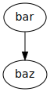
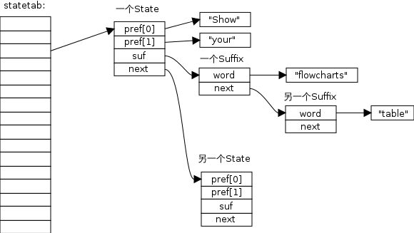

def say_hello():
printf 'hello, ReST'
if __name__ = '__main__'
say_hello()
当向一个空键推入新元素时， pushGenericCommand 函数执行以下两件事：
检查这个键是否存在于前面提到的 server.db[i]->blocking_keys 字典里， 如果是的话， 那么说明有至少一个客户端因为这个 key 而被阻塞，程序会为这个键创建一个 redis.h/readyList 结构， 并将它添加到 server.ready_keys 链表中。
readyList 结构的定义如下：
typedef struct readyList {
redisDb *db;
robj *key;
} readyList;